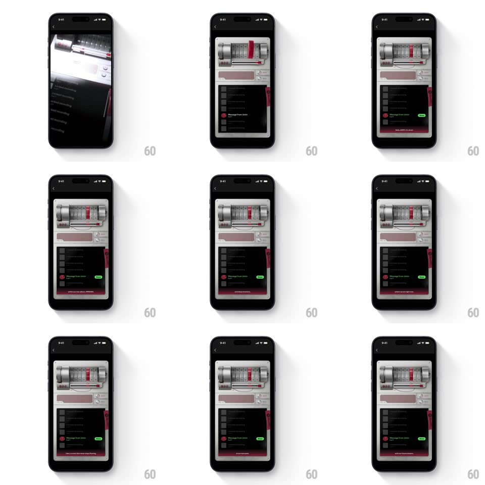

Media
Frame-by-frame

Rebuild this interaction 1:1: Spotify's BTS ARMY campaign - a collected vinyl fragment physically slots into a skeuomorphic tape recorder, unlocking an exclusive voice message you then play.

Rebuild this interaction 1:1: Spotify's BTS ARMY campaign - a collected vinyl fragment physically slots into a skeuomorphic tape recorder, unlocking an exclusive voice message you then play.
## Integration
Integration: stack-agnostic spec - springs given as stiffness/damping, timed motions as duration + curve; map every value to your framework and animation library of choice.
## Scene
A dark campaign screen holding a 3D skeuomorphic recorder: brushed-silver body, speaker grille, tape window with reels, red accent lighting. Below it, a message list ("Message from Jin", "Message from Jimin"...) - locked rows dim with red status dots, unlocked rows bright with a green "NEW" badge. Red light beams sweep the intro.
## Motion spec
Pattern: 3D fragment slots into the recorder, unlocking the message.
- Intro: red light beams sweep across the dark (600ms, ease-in-out) before the recorder rises into view (translateY 60 -> 0 with a 10deg tilt relaxing to 0, spring ~280/18, 600ms).
- The fragment (a small shard of vinyl) floats at the screen's edge, gently spinning (4s loop); tapping it sends it flying into the recorder's slot along an arc (500ms, ease-in) with a soft clack - the deck's reels jolt and start turning (2s loop), and the red window light glows.
- The unlock: the matching message row brightens (opacity 0.4 -> 1, 300ms), its red dot flips to a green NEW badge (badge pops, scale 0.5 -> 1.2 -> 1, spring ~420/14).
- Tapping the unlocked row plays the message: the reels spin faster, a progress hairline sweeps the tape window (real-time), and the row shows a live scrubber; tapping again pauses - reels stop on a dime.
- The device idles with a subtle float (+/-6px, 4s loop) between interactions.
## Calibration
- The recorder is skeuomorphic - brushed metal, depth, shadows; flat vector kills the fantasy.
- The slot-in must feel physical: anticipation lift, fast arc, settle jolt, then the reels.
## Reduced motion
Fragment fades into the slot; rows crossfade to unlocked; reels hold still during playback.
## Don't miss
- Locked rows stay visible but clearly sealed - the locked list is the collection itch.
- The green NEW badge is the reward state - red dots mean locked, green means yours.